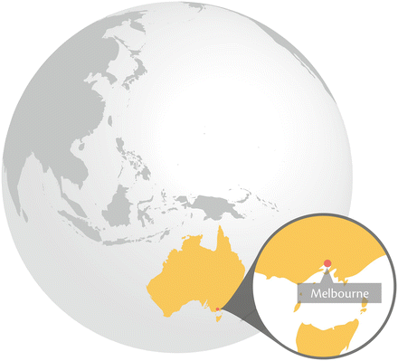
Key Findings
- Melbourne is rich in biodiversity because of its natural setting and historical land use decisions that have unintentionally favoured many species.
- Biodiversity values are threatened due to the rapid low-density expansion of the city on its fringe and the gradual degradation and loss of habitat within the urban matrix.
- Both native and introduced vegetation is valuable for ecological and social reasons, yet there are tensions around which should be prioritised in highly contested urban settings.
- Sophisticated biodiversity conservation legislation exists to curb ongoing losses of native vegetation. Although this has reduced the loss of native vegetation, declines in the extent and condition of threatened ecosystems around the city continue.
- Enhancement of Melbourne’s biodiversity in the future will require (i) changes to the nature of fringing urban development to reduce impacts on critically endangered ecosystems, (ii) greater commitment to protect, maintain and restore vegetation on public and private land, and (iii) increased emphasis of co-benefits of biodiversity and human wellbeing.
20.1 Introduction
Melbourne is a dynamic, culturally diverse and growing city located in a region of remarkable physical and biological diversity. It was built on the northern tip of Port Philip Bay (Fig. 20.1) and along the banks of the Yarra River in southeastern Australia. A young city by global standards, Melbourne was first settled by Europeans in 1835, yet has an indigenous history going back tens of thousands of years. What is now central Melbourne was once an important meeting place for many Aboriginal tribes (Presland 2010).
Melbourne was a favourable location for European settlement because of the readily available goods and services provided by natural ecosystems. These included clean water from the Yarra River, productive soils for growing food crops on the alluvial plains, and timber from nearby forests. The arrangement of the early township was planned strategically from its beginnings and was based on a grid arrangement of blocks with wide main streets interspersed by narrow laneways (Brown-May and Swain 2005). These remain characteristic features of the city centre today.
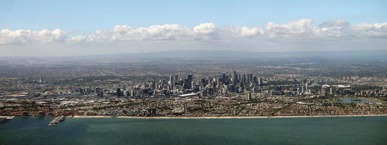
Fig. 20.1
Aerial view of Melbourne (Photo courtesy of ©James Relph 2012. All Rights Reserved)
Initially, economic growth was driven by exporting natural resources such as gold and wool to markets of the British Empire. While reliance on ecosystem services provided vast wealth, withdrawal of foreign investment and a collapse in property prices led to a severe economic depression during the 1890s. By the early twentieth century, Melbourne’s economy had diversified and a large manufacturing industry was being developed. By the 1970s, Australia embarked on a series of economic reforms and Melbourne’s economy shifted to a more “economic rationalist” structure and an increased emphasis on services (Connolly and Lewis 2010). In the early twenty-first century, Melbourne has a vibrant, diversified and internationally competitive economy providing a wide range of goods and services.
Immigration from overseas migrants contributed to several instances of rapid population growth in Melbourne. During the Victorian gold rush of the 1850s, over 600,000 prospectors from around the world arrived in Melbourne, with half of them settling in the city afterwards (Brown-May and Swain 2005). Although immigration from the United Kingdom was dominant, many prospectors from China and Western Europe also settled in the city. After Australia’s federation in 1901, the White Australia Policy restricted immigration by non-whites. Following the Second World War, large numbers of migrants arrived from southern Europe (Greece and Italy in particular). Abandonment of the White Australia Policy by the 1970s resulted in increased immigration from East and Southeast Asia, followed more recently by immigration from South Asia, the Middle East, and Africa.
As of 2010, Melbourne has an estimated population of 4.08 million (ABS 2011) (Fig. 20.2). While average population density is low (530 people/km2), it is highly variable, with inner Melbourne supporting 8,200 people/km2 (ABS 2012). The city’s population is projected to reach 6.5 million people by 2051 with much of the growth concentrated in the outer suburbs (ABS 2011). This has resulted in some fringing municipalities having current growth rates of over 8 % per year (ABS 2012).
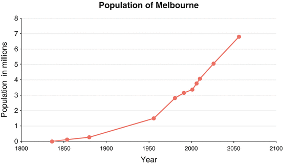
Fig. 20.2
Past and future projected population of metropolitan Melbourne (Source data from the Australian Bureau of Statistics, 2012)
A variety of geological formations have resulted in geomorphically and ecologically distinct landscapes within the Melbourne region. The western suburbs are located on flat Quaternary volcanic basalt plains, while the eastern parts of the city are located on an incised and folded platform of Silurian sedimentary rock. Much of the central and southern parts of the city are located on low elevation coastal and alluvial plains overlying Tertiary sandstones, clays and gravels. Extensive beach ridges have historically produced swamps through inhibiting drainage, however many of these have been artificially drained and the land claimed for agricultural or commercial use (Brown-May and Swain 2005).
Melbourne’s climate is temperate yet variable, with a rainfall gradient ranging from less than 500 mm/year in the west of Metropolitan Melbourne to over 1,100 mm/year to the east (Bureau of Meteorology and Walsh 1993; Brown-May and Swain 2005). Temperatures range from a mean maximum of around 25 °C in summer and between 13 and 14 °C in winter. Melbourne’s mean temperature has been rising over the past 50 years at a rate of 0.14 °C per decade and scientists predict it will continue to rise due to the effects of global climate change (Climate Change Task Force 2008).
20.2 Urbanization, Ecosystem Services and Biodiversity: Scenarios and Trends
20.2.1 The Ecological Character of the City Over Time
The greater Melbourne area supports some 1,864 indigenous plant species, of which 178 are considered threatened, and 520 indigenous fauna species, of which 136 of are currently considered threatened (Fig. 20.3). Melbourne also has a very diverse introduced biota. While over 1,100 taxa were recorded in a study of Melbourne’s streetscapes, only 76 were indigenous (Frank et al. 2006). It is likely that many thousands more species are cultivated in Melbourne’s gardens and parks. The high biological diversity of the city is due principally to three factors: the unique biodiversity of Australia, the diversity of habitats present in the greater Melbourne area, and the way in which development has historically taken place in the city.
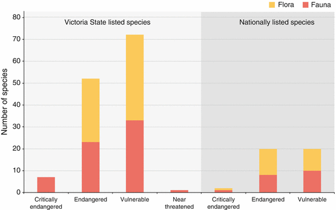
Fig. 20.3
Threatened species present within the Melbourne metropolitan region (Source data from Australian Institute of Urban Studies and City of Melbourne, 2005. “Environmental indicators for Metropolitan Melbourne: Bulletin 8”)
20.2.2 Australia and Melbourne’s Biodiversity
Australia is home to a diversity of plants and animals found nowhere else in the world as a result of its geographic isolation over time. It is unique floristically, because of the dominance of plant families such as the Myrtaceae, Fabaceae, Casuarinaceae and Proteaceae, and presence of many endemic plant species from the genera Acacia, Eucalyptus, Melaleuca, Grevillea and Allocasuarina. Australia also has an abundance of marsupials while lacking large native predators. Ecologically, the metropolitan area of Melbourne is positioned at the confluence of six bioregions (ARCUE 2009). These environments range from basaltic plains in the west that contain grasslands and woodlands, to low-lying, coastal and alluvial plains in the southeast featuring habitats such as dunes, floodplains and swampy flats. Aquatic, estuarine and marine habitats are also prevalent in and around the city, including the Yarra River and Port Phillip Bay.
20.2.3 Melbourne’s Development Over Time
In the first half of the nineteenth century, British cultural influences dominated Melbourne’s establishment as a city. Public landscapes were carefully planned and provided large areas of green space. However, as the city expanded at its fringes, many of the natural ecosystems that originally sustained the young city were either cleared or modified dramatically.
Following the discovery of the Victorian goldfields in 1851, population growth and commercial development necessitated an expansion of the city’s footprint. The establishment of large parks, broad, tree lined streets and detached and semi-detached housing with front and rear gardens during the late half of the nineteenth century have fundamentally influenced the city’s form and function today. After the Second World War, significant population growth, cheap housing availability outside the previously defined metropolitan area, and car ownership resulted in large numbers of people settling further from the city centre (Davison 2004) (Fig. 20.4). This trend was compounded by increasing affluence and a shift towards larger houses and smaller households (DPCD 2004). Indeed, in 1954 only 30 % of Melburnians lived further than 10 km from the General Post Office, compared with 84 % in 2001 (DPCD 2004). The spatial growth of Melbourne over time can be seen in Fig. 20.5.
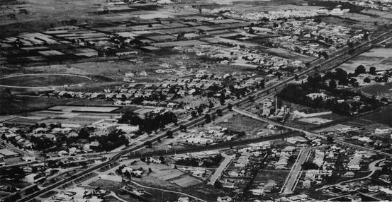
Fig. 20.4
Sporadic development in outer Melbourne in the 1950s (Photograph published with kind permission of the State of Victoria through the Department of Transport, Planning and Local Infrastructure ©Melbourne Metropolitan Board of Works, 1954. All Rights Reserved)
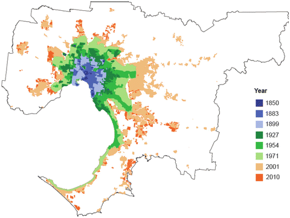
Fig. 20.5
Growth of Melbourne over time (Image courtesy of the Department of Planning and Community Development 2010. ©Department of Planning and Community Development 2010. All Rights Reserved)
20.2.4 Biodiversity Responses to City Development
The way in which Melbourne has grown in the past two centuries has enabled a range of indigenous and non-indigenous species to persist in the urban environment. Melbourne has one of the highest percentages of open green space of any city in the world (more than 28 %, including Crown road reserves) (VEAC 2011) (Fig. 20.6). This takes a variety of forms, including remnant patches of native vegetation, public parks, residential gardens, and recreational spaces (e.g., sports fields, golf courses) (Leary and McDonnell 2001). Incidentally, these areas have provided valuable habitat for many species as well as providing the ecosystem services characteristic of open space (e.g., recreational opportunities, psychological wellbeing, air and water filtration etc.). Moreover, the low-density, “quarter acre block” suburban development that typifies much of Melbourne allowed vegetation to exist on part of the property. Today, this vegetation helps to support large populations of certain faunal species. Those that have thrived in Melbourne however are generally urban tolerant species that can utilise resources from a wide area (Shukuroglou and McCarthy 2006; Williams et al. 2006; Harper 2005). These include Rainbow lorikeets (Trichoglossus haematodus), Grey-headed flying-foxes (Pteropus poliocephalus) and Brushtail possums (Trichosurus vulpecular).
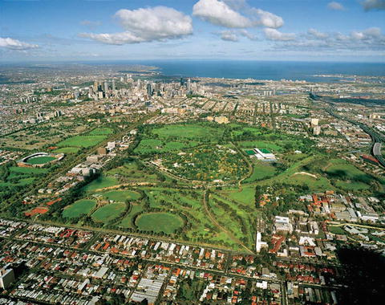
Fig. 20.6
Melbourne is known for its high proportion of parks and reserves, such as Royal Park to the north of the CBD (pictured) (Photograph courtesy of Yvonne Lynch and published with kind permission of ©City of Melbourne, 2013. All Rights Reserved)
Although benefiting some species, Melbourne’s development has contributed to the endangerment and loss of considerable indigenous flora and fauna, the persistence of which has not been considered in the planning of the city until recently. Four of the most significant pressures impacting upon the indigenous biodiversity of Melbourne are the loss of remnant vegetation for new urban development, the fragmentation of existing patches, the presence of invasive flora and fauna species and inadequate management of native vegetation.
20.2.5 Biodiversity and City Culture
As with many other European colonies in temperate climates, British colonists brought a range of familiar plants and animals that thrived in the new environment (Crosby 1986). The soils and climate of Melbourne and the significant environmental gradients from west to east meant that a wide range of plants could be cultivated in Melbourne, from temperate and subtropical species to cold climate species in the eastern ranges. Initially, cultural landscapes were planted with fast-growing evergreen conifers and native Blue Gums, reflecting prevailing European sensibilities (Spencer 1986). However, these species were largely replaced by European deciduous broad-leaf trees such as the London Plane Tree (Platanus × acerifolia), and the English Elm (Ulmus procera). Today central Melbourne still wears its colonial heritage as a badge of honour, with many grand avenues of this period remaining (Fig. 20.7).
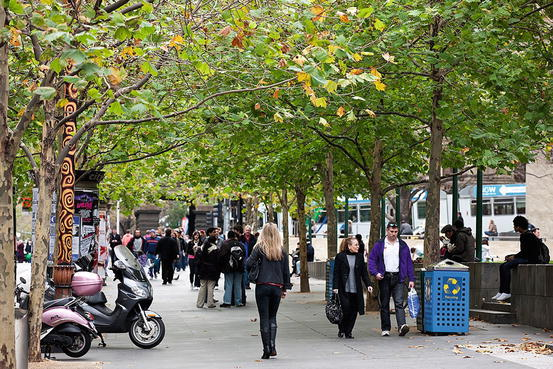
Fig. 20.7
Plane trees lining a busy walkway in central Melbourne (Photograph courtesy of Yvonne Lynch and published with kind permission of ©City of Melbourne, 2013. All Rights Reserved)
The current biological diversity of the city is undergoing rapid change as a function of habitat loss, population growth, cultural change, climate change pressures, and governance decisions. As the city expands at its fringes, many rare and depleted ecosystems are being placed under increasing pressure. This is evident in the west of the city where temperate native grassland communities are nearing total destruction. Despite being within a national biodiversity hotspot (Commonwealth of Australia 2011), only approximately 0.2 % of their original extent remains, with half of this in good ecological condition (Australian Academy of Science 2011). Furthermore, these grasslands are home to a number of plant and animal species threatened with extinction such as the Golden Sun Moth (Symenon plana), Growling Grass Frog (Litoria raniformis) and the Matted Flax-Lily (Dianella amoena). Much of the remaining grassland occurs within the peri-urban region of Melbourne and is under serious threat from urbanisation (Commonwealth of Australia 2011).
Population growth is placing pressure not only on fringing ecosystems but also those within the existing city bounds, as infill development places constricts and degrades green space and remnant habitat patches. Recent research suggests that clearing has led to a significant extinction debt in Melbourne’s indigenous flora (Hahs et al. 2009). Thus, even without additional habitat loss, future extinctions are likely unless additional effort is put into sustaining flora populations.
Many studies have highlighted the importance of management actions in protecting Melbourne’s biodiversity. Indeed inappropriate management has been attributed to the degradation of habitats because of a lack of ecological knowledge of the system or socio-political constraints. For example, it is known that regular burning of grasslands is necessary for the persistence of much of their biodiversity, yet is this is often opposed by the public when it occurs close proximity to residential areas (Carter et al. 2003).
Despite these significant threats to biodiversity, there is a growing trend towards the adoption of “green infrastructure”, which can promote biodiversity within the city. Driven in part by environmental regulation, city infrastructure such as roads is increasingly being designed to facilitate movement of organisms between patches of vegetation. Similarly, there are a number of notable riparian rehabilitation projects such as the Merri Creek corridor where the physical restoration of the waterway is associated with restoration of riparian vegetation and in-stream biodiversity (Bush et al. 2003) (Fig. 20.8). Water Sensitive Urban Design principles are also increasingly being adopted by municipalities, increasing biodiversity within streetscapes and benefiting in-stream biota through reducing the hydrological impact of urban development. Biodiversity is also beginning to be incorporated into urban design through features such as green roofs, walls and biodiverse public spaces.
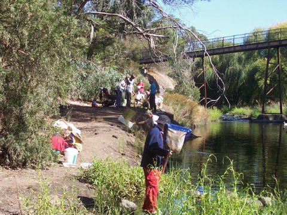
Fig. 20.8
Riparian restoration along Merri Creek (Photo by Luisa Macmillan, 2007 and published with kind permission of ©Merri Creek Management Committee. All Rights Reserved)
20.3 Institutional Planning, Decision-Making and Governance
20.3.1 Urban Planning
Urban planning in Melbourne is based on a hierarchical system of governance, with the Victorian State Government setting the strategic planning direction for the city, and local governments making decisions about locally significant matters. The principal planning instrument in Melbourne is the ‘planning scheme’, designed for each municipality. Planning schemes are developed by local governments through consultation with the state government, and integrate spatial zoning, planning policies and overlays to regulate the type and location of development (DPCD 2008). Biodiversity is typically accommodated within planning schemes through specific conservation zones or overlays to protect significant environmental assets.
In the 1970’s “Green wedges” were introduced as an official planning priority by the Victorian State Government. This consisted of clearly demarking urban growth corridors and retaining large areas of farmland and bushland in between. However, during the 1990s increasing political concern that these policies were stifling growth resulted in the removal of the planning provisions, enabling new development and a gradual encroachment into the green wedges. More recently, planning strategies that adopt the new urbanism paradigm have been introduced, with an increased focus on protecting green wedges. These include the “Melbourne 2030” and “Melbourne @ 5 Million” strategies (DPCD 2011). However, in practice, many of the strategies designed to protect green areas are failing to be executed effectively due to political and economic pressures (Buxton and Goodman 2003).
The role of private enterprise in influencing the biodiversity of Melbourne is becoming increasingly important. During much of the twentieth century, residential subdivisions were developed by government authorities and many smaller private developers. However, the end of the twentieth century saw the rise of large commercial developers of residential housing that developed very large master planned estates and often developed a number of large projects simultaneously. This has led the state government to respond by undertaking centralised growth area planning, taking some responsibilities from local government authorities (Growth Areas Authority 2013).
20.3.2 Protection of Remnant Indigenous Biodiversity
In Australia, all levels of government (federal, state, and local) are responsible for protecting indigenous biodiversity resulting in a complex interplay of policies and regulations that function at different scales and with different objectives. At the federal level, the Environment Protection and Biodiversity Conservation (EPBC) Act 1999 (DSEWPaC 2012) is the Australian Government’s main legislation dealing with the protection of indigenous biodiversity. It is triggered when an action (e.g., land clearing for urban development) is likely to have a significant impact on a “matter of national environmental significance” such as a listed threatened species or community (DSEWPaC 2012). In these cases the Act has the power to stop or limit activities on both public and private land.
At the state level, there are two primary pieces of legislation that regulate the clearing of native vegetation in Victoria. The first is the Flora and Fauna Guarantee Act 1988 (FFG Act; DSE 2012), which focuses on preserving particular threatened species and communities and controlling processes that threaten them. Importantly, emphasis is placed not only on the species themselves but the habitat that supports them and the processes that have contributed to their demise. In practice the FFG Act has little power to protect threatened species/communities on private land (Lawyers for Forests 2002), limiting its ability to achieve good biodiversity conservation outcomes within urbanised Melbourne.
The second piece of legislation is the Native Vegetation Framework (NVF; DSE 2002). It was introduced in 2002 by the Victorian government and takes a broader approach to managing native vegetation. Unlike the FFG Act, it is primarily focused on private land. The NVF “establishes the strategic direction for the protection, enhancement and revegetation of native vegetation across the State [of Victoria]” and has the goal of achieving a “net gain” in native vegetation, accounting for both area and condition of vegetation (DSE 2002).
The target of “net gain” in vegetation under the NVF has necessitated the development of a range of innovative instruments to implement the legislation and evaluate its outcomes. One of the main components of the NVF is the “Habitat Hectares” metric (Parkes et al. 2003). This provides a repeatable measure of vegetation condition relative to a mature and undisturbed benchmark of the same vegetation type and also incorporates information about landscape context. One of the principal uses of the Habitat Hectares metric is as a “currency” for trading losses (from permitted clearing) with gains from the implementation of biodiversity offsets. Offsetting biodiversity losses resulting from development actions is becoming increasingly used to achieve the aims of the NVF within the context of continuing urban growth in Melbourne. The offsetting policy within the NVF is based on the mitigation hierarchy of avoid, minimise, and then offset unavoidable losses as a last resort (DSE 2002). In 2013, the Victorian Government introduced reforms to regulations governing permitted clearing of native vegetation (DEPI 2013a). These changes allow ‘low impact’ vegetation clearing to be exempt from site assessments, with the value of biodiversity present on a site determined via modelled maps of vegetation cover, condition and significance. They also allow proponents to purchase biodiversity offsets via an ‘over the counter’ fee instead of being responsible for finding the offset site(s) that meet requirement of the NVF. While the new regulations will reduce the regulatory burden for many landholders, the impacts of these changes on Melbourne’s native biodiversity remain to be seen. Indeed, a 2008 government report evaluating the previous version of the NVF showed it was failing to achieve its objective of a net gain in “both area and condition of vegetation” (DSE 2008). Given that this overarching objective has now been revised to “no net loss” in area extend and condition of vegetation (The State of Victoria 2013), the long-term protection of native vegetation in the face of increasing development pressure from Melbourne remains dubious.
The future of native biodiversity protection in the Melbourne region will however rest to a large degree on the plans developed for proposed urban growth regions. Because of the scale of the proposed development and the presence of nationally listed threatened species and communities in the growth areas, the state government opted for a ‘strategic assessment’ of Melbourne’s growth corridors (DSE 2009) under the EPBC Act. In this approach, impacts to nationally listed threatened species and communities are assessed alongside consideration of state vegetation regulations and plans for new housing and infrastructure in a ‘strategic’ manner. One of the primary strategies employed within the assessment is the establishment of new conservation reserves to offset future biodiversity losses from development (DEPI 2013b), consisting of approximately 300 ha of threatened native grassland communities (DSE 2009; Gordon et al. 2011). While biodiversity offsetting has already helped reduce the loss of native vegetation associated with recent spatial growth of the city, it appears that the future of Melbourne’s native vegetation communities will rest on the efficacy of these offset schemes, especially for native grasslands – one of the most threatened ecosystems in Australia (Williams et al. 2005).
20.3.3 Management of Biodiversity Within the City Landscape
As with planning, there is a hierarchy of responsibility for the design and management of vegetated landscapes in Melbourne. Within the metropolitan region are national parks (regulated by the federal government but managed by state government), state and regional parks (managed by Parks Victoria; a state government authority) and local parks (managed by local government). Vegetation along streetscapes and other public infrastructure is largely also governed by local municipal councils.
From their early beginnings, central Melbourne and some inner suburbs retain a strong European heritage and distinct colonial character. This is evidenced by the characteristic English Elm trees that line many of the large streets. However, recent evidence suggests that traditional non-native species of street trees may be under threat from a changing climate (Kendal 2011). With expected minimum increases in mean annual temperatures of between 2 and 5 °C over the coming century (Ramanathan and Feng 2008) and associated reductions in water infiltration, many local government street tree planting schemes may need review. In contrast to inner Melbourne, some outer suburbs have retained a significant presence of Australian vegetation (McDonnell and Holland 2008; Oates and Taranto 2001). Many of these indigenous species were retained amidst spreading urban land uses and planting of non-indigenous vegetation partly because they were present on land owned and managed by the Melbourne and Metropolitan Board of Works (MMBW) (Brown-May and Swain 2005). The amalgamation of the ‘parks’ division of the MMBW with the conservation-focused National Parks Service in 1996 resulted in much of this urban parkland land being granted formal protection. Recently, local governments have also invested in ‘bush regeneration’ programs to restore patches of remnant indigenous vegetation that had become ecologically degraded as a result of processes such as weed invasion, nutrient enrichment and pollution.
20.4 Individual Decision-Making and Governance
Melbourne is comprised predominantly of private land managed by landholders who commonly cultivate plants on their properties. Around the world, cultivated landscapes have been shown to have very high levels of species diversity, often much higher than in surrounding native vegetation (e.g., Thompson et al. 2003), This is the cumulative result of many individual decision makers (Kendal et al. 2010) and is certainly true of Melbourne, where both the biophysical realities and cultural diversity present are reflected in the urban landscapes.
Historical trends in the cultural composition of Melbourne have resulted in changed public perceptions and expectations of urban landscapes. The dominance of detached and semi-detached housing containing a front and rear garden has provided ample opportunities for cultural biodiversity preferences to be expressed via gardening (Head et al. 2004). At the same time, there has been an increase in the popularity of native plants in residential gardens since the 1970s (Elliot and Elliot 2002), reflected in part by the emergence of books and nurseries in that promote indigenous species. Native trees also began to be used in public landscapes after the Second World War (Spencer 1986). Recent changes to planning practices and housing preferences are however resulting in new subdivisions and infill development with minimal private open space (Hall 2010). Consequently, the responsibility for enhancing biodiversity within developed areas is increasingly shifting from private landholders to public authorities.
When it comes to areas of remnant indigenous vegetation, the size of many private lots exempt them from state regulations and few municipal authorities include ordinances controlling the removal of trees on private land. However, private gardens are often voluntarily maintained to promote biodiversity through the cultivation of rare and threatened Australian species (e.g., the Wollemi Pine – Wollemi nobilis), or through planting bird-attracting species (e.g., Callistemon or Banksia spp.). Many local municipalities encourage such actions, with many known to freely give seedlings of native plants to residents.
The ownership of animals has been more tightly controlled than vegetation management, with pets generally requiring registration with restriction over movement off the property, and permits required for some forms of domestic animal ownership. This is especially important for the protection of native fauna, as cats can decimate populations of native mammals and birds and have been shown to roam many kilometres from their home. Native animals are generally protected and their ownership as pets, where permitted, is subject to licensing arrangements.
20.5 Underlying Tensions in Biodiversity Governance
The contemporary governance and institutional structures that influence biodiversity in Melbourne have developed in the context of deep ideological tensions. The two most prominent tensions are between growth and conservation, and between ‘native’ and ‘exotic’ species. The growth-conservation tension is expressed most clearly by the planning strategies imposed in Melbourne over time, while the ‘native’-‘exotic’ tension is most clearly expressed in the formulation of conservation policies and approaches to urban landscape design.
20.5.1 Tensions Between Growth and Conservation
The maintenance and health of natural ecosystems has been at odds with city growth in Melbourne from its beginnings. Soon after the township was settled, the ecosystems that had originally made it suitable for human occupation through provision of good soils, timber and clean water were viewed as a constraint to its further development. Yet because of the abundance of resources elsewhere in the landscape, there was little attempt to preserve or integrate natural ecosystems into the city. Indeed, until recently, protection of biodiversity within formal planning instruments was incidental and ad-hoc. For example, large areas of native vegetation were originally reserved as land for freeways or retarding basins by the Melbourne and Metropolitan Board of Works (Brown-May and Swain 2005) but are now valuable for biodiversity as most surrounding native vegetation has been cleared or modified.
The planning systems that have guided Melbourne’s development demonstrate the tension between urban growth and conservation. Historically, the fluctuation between growth and conservation priorities at a state level (e.g., the strengthening and weakening of the urban growth boundary) demonstrate a struggle to reconcile the two ideas politically, while the presence of clearly marked areas for biodiversity conservation and development in current planning schemes highlight the spatial separation of the two concepts. This dynamic is complicated all the more by a hierarchical planning structure whereby federal, state and local governments will very often have differing views on the relative priorities of growth and conservation. Worryingly, with the responsibility for the design of new developments largely falling to private companies, rarely are attempts made to protect or promote biodiversity outside of clearly demarked “conservation” areas.
Another area that highlights the tension between growth and conservation in Melbourne is the management of bushfire and the presence of dense eucalyptus forests on the urban fringe. Eucalypts are well adapted to fire, having evolved to possess volatile oils and decorticating bark that promote it. Periodic wildfire (bushfire in the local vernacular) has resulted in large scale loss of life on the urban fringes, the most devastating of which being the 2009 “Black Saturday” bushfires on the 7th of February, with 173 fatalities. Changes to planning schemes in response to these events have permitted much greater removal of native vegetation near housing in some areas despite its biodiversity value.
20.5.2 Tensions Between ‘Native’ and ‘Exotic’ Species Conservation
To the early settlers of Melbourne, the unique flora and fauna of Australia differed in appearance and perceived usefulness from the European plants and animals they were familiar with (Figs. 20.9 and 20.10). From this time onwards, a tension has existed about how to manage both indigenous and introduced species of plants and animals within the city. From an institutional governance perspective, the separation of “native” and “exotic” forms of biodiversity has resulted simultaneously in the development of strong and progressive legislation to conserve threatened indigenous species and ecological communities, and confusion about the role and structure of biodiversity in ‘cultural’ landscapes.
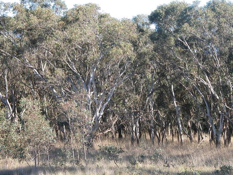
Fig. 20.9
Native woodland vegetation typical of the north and west of Melbourne (Photo by ©Ascelin Gordon, 2005 and published with his kind permission. All Rights Reserved)
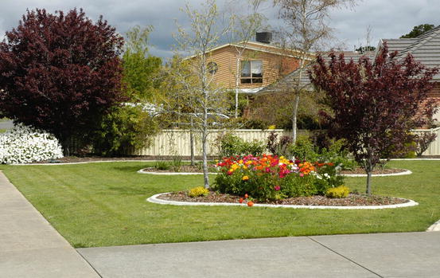
Fig. 20.10
An example of a European style cultivated garden, common in Melbourne (Photo by ©Dave Kendal, 2009 and published with his kind permission. All Rights Reserved)
The strong legal protection of indigenous vegetation, while essential from an ecological perspective, suggests that ‘native’ biodiversity is viewed separately from ‘introduced’ plants and animals present in Melbourne. Indeed, this tension between native and exotic landscapes is entrenched in the management structure of many local governments, with a separate “bush crew” managing areas of native vegetation while horticulture teams manage green space. Investment by local governments in “bush regeneration” programs often runs alongside street planting policies that promote non-native species. However, the retention of these species has been challenged, particularly during the recent drought, with some calling for the planting of native species that use less water. Indeed, the debate over which type of trees to plant along streets and in gardens has been picked up in the media (e.g., The Age 2006), suggesting that the ‘native’-‘exotic’ tension is present not only in formal governance institutions but also in the culture and minds of Melburnians.
20.6 Future Directions for Melbourne’s Biodiversity
The coming decades are a critical time for the future of biodiversity in Melbourne. Decisions made within the next 30 years are likely to influence biodiversity outcomes long into the future. As already discussed, the current state of biodiversity assets in the city is the result of a series of ad-hoc decisions and serendipitous events that unintentionally led to a high diversity of plants, animals and communities, and a city that is pleasant to live in. However, continuing to make decisions in this way is unlikely to achieve good biodiversity outcomes in the future, as population pressures and urban development continue to impinge upon the very factors that made it appealing for human residence from the outset. As a young city, Melbourne is positioned favourably to learn from other cities around the world and build towards a future that contains both a healthy human population and flourishing biodiversity. The degree to which this is achieved will depend largely on decisions made and actions taken in four arenas: (i) urban growth on the fringe of Melbourne, (ii) habitat management in established areas, (iii) management of green assets, and (iv) promotion of biodiversity on private land.
As mentioned above, the way in which population increases are accommodated within the city will affect the future of Melbourne’s biodiversity. Although infill development may threaten the biodiversity present within parks and backyards, continued expansion of suburbs at the fringes of the city will have disproportionately large impacts on indigenous biodiversity that is not accommodated elsewhere within the city. The enforcement of a growth boundary at the fringes of Melbourne is therefore likely to result in a scenario of high biodiversity conservation values on the edge of the city, whereas a relaxing of this boundary will result in a scenario of continuing biodiversity loss in this area, regardless of biodiversity offset policies. Moreover, the style of suburban development being produced by large private development companies on the city’s fringes could lead to a gradual homogenisation of biodiversity where a small number of plant species are used in street and landscape plantings in master-planned estates.
Management of extant habitat in existing suburbs is another critical arena that will influence biodiversity outcomes in the future of Melbourne. Many remnant habitat patches are at risk of serious degradation if not actively managed according to best available scientific knowledge. The looming threat of an extinction debt (Hahs et al. 2009) demonstrates clearly the challenge Melbourne faces in retaining existing levels of native species richness in the urban landscape over time. Failing to recognise and manage Melbourne’s current biodiversity assets and their threats will result in continued decline in biodiversity and a future scenario of degraded ecosystem function. However, actively mitigating the impacts of urban pressures such as edge effects, weed invasion, pollutants and predation by introduced species can help create a future where the biodiversity and ecological function of remnant habitat patches are maintained and enhanced.
A third arena that will determine the future biodiversity of Melbourne is the way in which ‘green infrastructure’ assets are created and managed. These are anthropogenic features within the city that contribute significantly to biodiversity but do not constitute remnant native vegetation. They include features such as street trees, public parks, gardens, median strips, ponds and swales (Figs. 20.11 and 20.12). Since these features are not designed primarily for biodiversity, there is a risk that the biodiversity benefits they do provide may be degraded unintentionally over time if not carefully monitored and cared for. Often, they are managed for aesthetic and public health and wellbeing outcomes. Research linking biodiversity conservation with public health benefits and human wellbeing may therefore help to conserve and increase biodiversity in these landscapes. Melbourne has a good platform for the enhancement of biodiversity within the metropolitan region, due to the presence of large areas of parkland. However, as the population continues to grow, green assets must be valued and integrated with new urban forms.
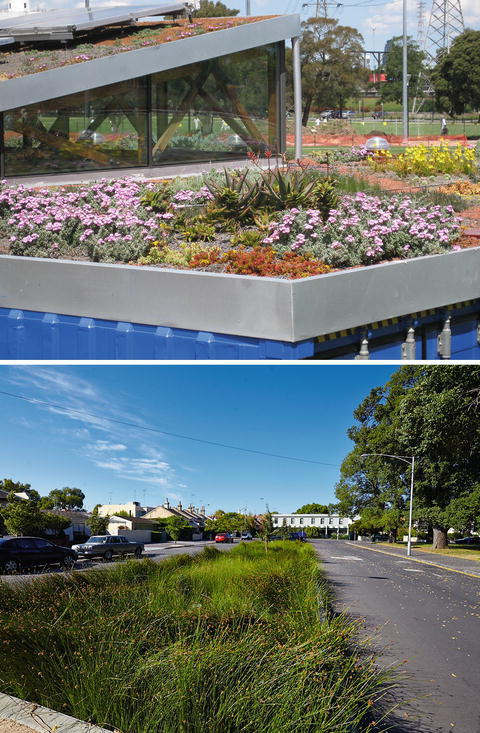
Figs. 20.11 and 20.12
Green infrastructure such as green roofs and vegetated swales can contribute significantly to the biodiversity of urban landscapes, while simultaneously offering other environmental and social benefits (Photos courtesy of Yvonne Lynch, and published with kind permission of © City of Melbourne 2013. All Rights Reserved)
Many of the biodiversity outcomes in a city are the result of local actions; therefore local governments in Melbourne have a strong role to play in the creation of neighbourhoods that promote biodiversity. If local governments in Melbourne adopt a holistic view of biodiversity in their legal instruments and policies (Ives et al. 2010), this will help to break down the potentially destructive dichotomy between ‘native’ and ‘exotic’ biodiversity. Similarly, governments that appreciate more fully the interrelationships between biodiversity and human wellbeing are more likely to find ‘green’ solutions in everyday planning and infrastructure decisions, thus helping to promote biodiversity in the city into the future. Greater integration of environmental policies with other regulatory instruments will also help to achieve this. Studies such as McConnell and Walls (2005) and Bowman et al. (2009) have demonstrated that a financial premium can be justified for housing located near to or integrated with areas of high ecological value. Therefore opportunities should be explored for integrating biodiversity and ecosystem function into residential areas.
References
Australian Academy of Science. (2011). Stressed ecosystems: Better decisions for Australia’s future. Recommendations from the Theo Murphy High Flyers Think Tank 2011. Available online: http://www.science.org.au/events/thinktank/thinktank2011/documents/ThinkTankRecommendations2011.pdf. Accessed 21 May 2012.
Australian Bureau of Statistics (ABS). (2011). Australian social trends, Jun 2010. Available online: http://www.abs.gov.au/AUSSTATS/abs@.nsf/Lookup/4102.0Main+Features10Jun+2010. Accessed Apr 2012.
Australian Bureau of Statistics (ABS). (2012). Regional population growth, Australia, 2010–11. Available online: http://www.abs.gov.au/ausstats/abs@.nsf/Products/3218.0~2010-11~Main+Features~Victoria?OpenDocument#PARALINK1. Accessed Apr 2012.
Australian Research Centre for Urban Ecology (ARCUE). (2009). Biodiversity of Metropolitan Melbourne. Report prepared for the Victorian Environmental Assessment Council. Available online: http://www.veac.vic.gov.au/documents/Biodiversity%20of%20Metropolitan%20Melbourne.pdf. Accessed 21 May 2012.
Brown-May, A., & Swain, S. (Eds.). (2005). The encyclopedia of Melbourne. Cambridge/Port Melbourne: Cambridge University Press. Also available online: http://www.emelbourne.net.au/. Accessed Apr 2012.
Bureau of Meteorology, & Walsh, N. G. (1993). Climate of Victoria. In D. B. Foreman & N. G. Walsh (Eds.), Flora of Victoria: Vol. 1. Introduction (pp. 47–60). Melbourne: Inkata Press.
Bush, J., Miles, B., & Bainbridge, B. (2003). Merri Creek: Managing an urban waterway for people and nature. Ecological Management & Restoration, 4(3), 170–179.CrossRef
Buxton, M., & Goodman, R. (2003). Protecting Melbourne’s Green Belt. Urban Policy and Research, 21(2), 205–209.CrossRef
Carter, O., Murphy, A., & Cheal, D. (2003). Natural temperate grassland. Environment Australia. Available online: http://www.environment.gov.au/biodiversity/publications/grasslands/pubs/grassland.pdf. Accessed Apr 2012.
Climate Change Task Force. (2008). Future map Melbourne 2030. Melbourne: Committee for Melbourne. http://www.melbourne.org.au/docs/climatechange_futuremap_melbourne_2030.pdf. Accessed 5 Sept 2013.
Commonwealth of Australia. (2011). Nationally threatened ecological communities of the Victorian volcanic plain: Natural temperate grassland & grassy eucalypt woodland. Available online: http://www.environment.gov.au/epbc/publications/pubs/grasslands-victoria.pdf. Accessed 22 June 2012.
Connolly, E., & Lewis, C. (2010). Structural change in the Australian economy. Bulletin of the Reserve Bank of Australia, pp. 1–10.
Crosby, A. (1986). Ecological imperialism: The biological expansion of Europe, 900–1900. Cambridge: Cambridge University Press.
Davison, G. (2004). Car wars: how the car won our hearts and conquered our cities. Crows Nest, NSW, Australia: Allen & Unwin.
Department of Environment and Primary Industries (DEPI). (2013a). Reforms to Victoria’s native vegetation permitted clearing regulations.
http://www.dse.vic.gov.au/__data/assets/pdf_file/0010/169867/Overview_NVR.pdf. Accessed 11 June 2013.
Department of Environment and Primary Industries (DEPI). (2013b). Biodiversity conservation strategy for Melbourne’s growth corridors. http://www.dse.vic.gov.au/__data/assets/pdf_file/0011/164396/BCS-Part-A-no-maps.pdf. Accessed 11 June 2013.
Department of Planning and Community Development (DPCD). (2004). Spreading out – 1954 to 2001. Factsheet available online: http://www.dpcd.vic.gov.au/__data/assets/pdf_file/0013/31117/Spreading_out_1954_to_2001.pdf. Accessed Apr 2012.
Department of Planning and Community Development (DPCD). (2008). Planning: A short guide. Available online: http://www.dpcd.vic.gov.au/__data/assets/pdf_file/0020/41267/Planning_-_a_Short_Guide.pdf. Accessed Apr 2012.
Department of Planning and Community Development (DPCD). (2011). Melbourne 2030: A planning update – Melbourne @ 5 million. Available online: http://www.dpcd.vic.gov.au/planning/plansandpolicies/planningformelbourne/planninghistory/melbourne@5million. Accessed Apr 2012.
Department of Sustainability and Environment (DSE). (2002). Victoria’s native vegetation management a framework for action. Melbourne: Department of Sustainability and Environment. http://www.dse.vic.gov.au/__data/assets/pdf_file/0016/102319/Native_Vegetation_Management_-_A_Framework_for_Action.pdf. Accessed Mar 2012.
Department of Sustainability and Environment (DSE). (2008). Native vegetation net gain accounting: First approximation report. Available online: http://www.dse.vic.gov.au/__data/assets/pdf_file/0003/97347/Net_Gain_Accounting_-_First_Approximation_Report.pdf. Accessed 5 Sept 2013.
Department of Sustainability and Environment (DSE). (2009). Delivering Melbourne’s newest sustainable communities: Strategic impact assessment report for the Environment Protection and Biodiversity Conservation Act 1999. http://www.dse.vic.gov.au/__data/assets/pdf_file/0016/102508/SIAR_Part_1_pp_1-32.pdf. Accessed 12 June 2013.
Department of Sustainability and Environment (DSE). (2012). Flora & Fauna Guarantee Act. Available online: http://www.dse.vic.gov.au/plants-and-animals/native-plants-and-animals/threatened-species-and-communities/flora-and-fauna-guarantee-act. Accessed Apr 2012.
Department of Sustainability, Environment, Water, Population and Communities (DSEWPaC). (2012). Environment Protection and Biodiversity Conservation Act. http://www.environment.gov.au/epbc. Accessed 28 Mar 2012.
Elliot, R., & Elliot, G. (2002). Preservation by cultivation: The genesis and growth of the Australian Plants Society. Australian Garden History, 13(6), 21–25.
Frank, S., Waters, G., Beer, R., & May, P. (2006). An analysis of the street tree population of greater Melbourne at the beginning of the 21st century. Arboriculture & Urban Forestry, 32(4), 155–162.
Gordon, A., Langford, W. T., Todd, J. A., White, M. D., Mullerworth, D. W., & Bekessy, S. A. (2011). Assessing the impacts of biodiversity offset policies. Environmental Modelling and Software, 144, 558–566.
Growth Areas Authority (2013). Planning Publications. http://www.gaa.vic.gov.au/planning-publications/. Accessed 5 Sept 2013.
Hahs, A. K., McDonnell, M. J., McCarthy, M. A., Vesk, P. A., Corlett, R. T., Norton, B. A., Clemants, S. E., et al. (2009). A global synthesis of plant extinction rates in urban areas. Ecology Letters, 12, 1165–1173. doi:10.1111/j.1461-0248.2009.01372.x.PubMedCrossRef
Hall, T. (2010). The life and death of the Australian backyard. Collingwood, VIC, Australia: CSIRO Publishing.
Harper, M. J. (2005). Home range and den use of common brushtail possums (Trichosurus vulpecula) in urban forest remnants. Wildlife Research, 32(8), 681. doi:10.1071/WR04072.CrossRef
Head, L., Muir, P., & Hampel, E. (2004). Australian backyard gardens and the journey of migration. Geographical Review, 94(3), 326–347.CrossRef
Ives, C. D., Taylor, M. P., Nipperess, D. A., & Davies, P. (2010). New directions in urban biodiversity conservation: The role of science and its interaction with local environmental policy. Environmental and Planning Law Journal, 27, 249–271.
Kendal, D. (2011). Potential effects of climate change on Melbourne’s street trees and some implications for human and non-human animals. Proceedings of the 2011 State of Australian Cities Conference, Melbourne.
Kendal, D., Williams, N., & Williams, K. (2010). Harnessing diversity in gardens through individual decision makers. Trends in Ecology & Evolution, 25(4), 201–202.CrossRef
Lawyers for Forests. (2002). Review of the flora and fauna guarantee act 1988 (vic). Melbourne: Lawyers for Forests. http://lawyersforforests.asn.au/pdf/FFG_review.pdf. Accessed 27 Mar 2012.
Leary, E., & McDonnell, M. J. (2001). The patterns of public open space in Metropolitan Melbourne. Australian Parks and Leisure, 4, 34–36.
McConnell, V., & Walls, M. (2005). The value of open space: Evidence from studies of nonmarket benefits. Washington, DC: Resources for the Future.
McDonnell, M. J., & Holland, K. D. (2008). Biodiversity. In P. W. Newton (Ed.), Transitions: Pathways towards sustainable urban development in Australia (pp. 253–266). Collingwood, VIC, Australia: CSIRO Press.
Oates, A., & Taranto, M. (2001). Vegetation mapping of the Port Phillip and Westernport region. Melbourne: Arthur Rylah Institute for Environmental Research, Department of Natural Resources and Environment.
Parkes, D., Newell, G., & Cheal, D. (2003). Assessing the quality of native vegetation: The ‘habitat hectares’ approach. Ecological Management and Restoration, 4, 29–38.CrossRef
Presland, G. (2010). First people: The eastern Kulin of Melbourne, Port Phillip and central Victoria. Melbourne, VIC, Australia: Museum Victoria.
Ramanathan, V., & Feng, Y. (2008). On avoiding dangerous anthropogenic interference with the climate system: Formidable challenges ahead. Proceedings of the National Academy of Sciences, 105(38), 14245–14250.CrossRef
Shukuroglou, P., & McCarthy, M. A. (2006). Modelling the occurrence of rainbow lorikeets (Trichoglossus haematodus) in Melbourne. Austral Ecology, 31, 240–253.CrossRef
Spencer, R. (1986). Fashions in street tree planting in Victoria. Landscape Australia, 4, 304–309.
The Age. (2006). Dry city faces loss of its exotic green heritage. Article published 10 November 2006. Available online: http://www.theage.com.au/news/national/dry-city-faces-loss-of-its-exotic-green-heritage/2006/11/09/1162661832115.html. Accessed Apr 2012.
The State of Victoria. (2013). Amendments to the Victoria planning provisions.
http://www.dse.vic.gov.au/__data/assets/pdf_file/0003/169923/VPP_clauses_NVR.pdf. Accessed 12 June 2013.
Thompson, K., Austin, K. C., Smith, R. M., Warren, P. H., Angold, P. G., & Gaston, K. J. (2003). Urban domestic gardens (I): putting small-scale plant diversity in context. Journal of Vegetation Science, 14(1), 71–77.CrossRef
Victorian Environmental Assessment Council (VEAC). (2011). Metropolitan Melbourne investigation: Final report. Available online: http://www.veac.vic.gov.au/investigation/metropolitan-melbourne-investigation. Accessed Apr 2012.
Williams, N. S. G., McDonnell, M. J., & Seager, E. J. (2005). Factors influencing the loss of an endangered ecosystem in an urbanising landscape: A case study of native grasslands from Melbourne, Australia. Landscape and Urban Planning, 71, 35–49.CrossRef
Williams, N. S. G., McDonnell, M. J., Phelan, G. K., Keim, L. D., & van der Ree, R. (2006). Range expansion due to urbanization: Increased food resources attract grey-headed flying-foxes (Pteropus poliocephalus) to Melbourne. Austral Ecology, 31, 190–198.CrossRef